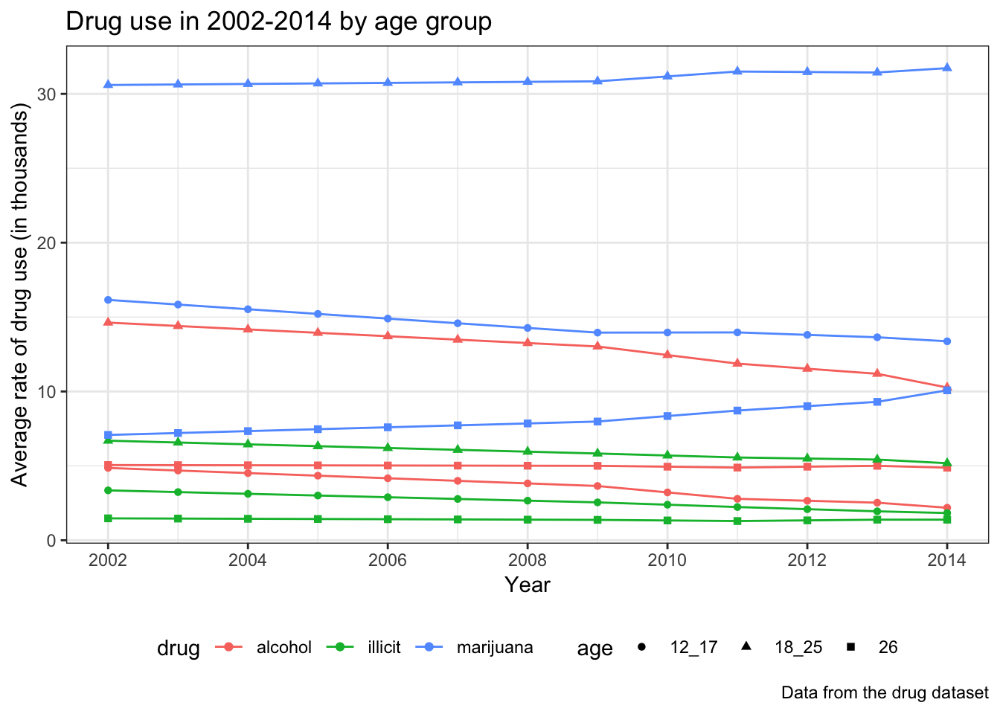

Substance abuse is characterized by the repeated use of addictive drugs that changes neuroadaptations in the neural system, resulting in the withdrawal syndrome after the drug effects diminish (White, 2004). A study of arrestees in Maricopa County, Arizona suggests that diverted medical marijuana users were more likely to commit property crime, violent crime, Driving Under the Influence (DUI), and drug selling than nonusers (Katz et al., 2018). Therefore, not only substance abuse represents a significant public health problem, but alcohol and illicit drug use are also associated with criminal activities in the United States (Jaegers et al., 2018). For example, the United States Drug Enforcement Administration (DEA) reports a majority of drug related crimes are committed by drug users (Resignato, 2000), and the evidence of high rates of drug misuse among criminal samples suggests an association between crime and illegal drug use (Rolfe et al., 2000). Furthermore, studies have shown more crime-related activity during periods of addiction than non-addiction periods (Rolfe et al., 2000). Substance use disorders (SUDs) as defined by the Diagnostic and Statistical Manual of Mental Disorders, Fourth Edition (DSM-IV) for alcohol, marijuana, and pain relievers are associated with violence (Grant et al., 2018). Motivation for committing property crimes can be attributed to economic problems. For instance, many heroin addicts finance their habits through committing property crimes, especially theft. (Rolfe et al., 2000). For violent crimes, the majority of murders linked to drug addicts are associated to the drug trade (Harrison & Gfroerer, 1992).
There is a substantial decline in both the violent crime rate and property crime rate since 1993 (“5 facts about crime in the U.S”, 2018). However, the FBI reported a 7% increase in the violent crime rate between 2014 and 2016, with a 20% increase in the murder rate (“5 facts about crime in the U.S”, 2018). Consistent with the decrease in crime rates, past year cocaine use has fallen since 2002 (“Nationwide Trends”, 2015). Both marijuana and illicit drugs use increased slightly after 2008 (“Nationwide Trends”, 2015). Although the relationship between drug use and crime has been studied in detail these years, it is not clear whether the drug use pattern can be used to inform or even predict different types of crimes. The main purpose of the study is to build a predictive model using regression to predict future crime trend from drug use information.
1.1 Data description
The data was collected by FBI’s Uniform Crime Reporting (UCR) Program, which recorded different types of offenses by states, regions, or geographic divisions. The data presented each crime by volumn and rate per 100,000 inhabitants. Detailed description of columns were as follow:
state: state names
year: year the offense recorded
population: total population of the state
violent_crime_number/rate: violent crime involved force or threat of force against the victims. It included four types of offenses: murder and nonnegligent manslaughter, rape, robbery, and aggravated assault.
columns containing murder manslaughter, rape, robbery, and aggravated assault were subdivision of violent crime
property_crime_number/rate: property crime indicated offenses involving property lost without force or threat of force. It included three types of offenses: burglary, larceny-theft, motor vehicle theft.
columns containing burglary, larceny-theft, and motor vehicle theft were subdivision of property crime
1.2 Data cleaning
The crime dataset was loaded from the google sheet, detailed data cleaning steps were as follow:
Clean up column names using ‘janitor’ packages and manually delete the subscripts of text
Convert column ‘area’ from character to factor
Remove comma in columns containing numbers and rates, followed by transformation from character to numeric
Fill up area names where appropriate
Remove ‘rape_legacy’ related columns as it has overlapping information with ‘rape_revise’ columns
Remove NAs and create subsets by states, region, and geographic division
2.1 Data description
This dataset is about substance abuse (cigarettes, marijuana, cocaine, alcohol) among different age groups (12-17, 18-25, 26 or above) and states in United States from year 2002 to 2014. Data was collected from individual state as part of the NSDUH study.
2.2 Data cleaning
The dataset can be accessed through its original website, detailed data cleaning steps were as follows:
Mainly focusing on the substance abuse of marijuana, illicit drug (cocaine) and alcohol, so firstly all related columns from the whole dataset were selected, including state, year and rate of different substance abuse in different age groups. Since the age groups and substance type were nested together in the column names, all the columns except year and state were gathered and then the strings were replaced before the age number for later separating. Finally, the data was separated into “age” and “rate” which resulted in a tidy dataset.
In order to visualize how the crime rate differs in different areas, regions and states, and how it change over time, we made scatter plots to show the differences at different geographic levels.

Process of building shiny for drug data:
As there were 51 states, three types of drugs (marijuana, illicit drug, alcohol), three age groups (12-17, 18-25, 26 or above) and four or five degrees in each drug (abuse, binge, dependence, need treatment, use). The main purpose was to analyze the distribution of degrees in each drug in each state through years and also the distribution of degrees of each drug in a specific age group. Moreover, there were data for rate of perception risk in marijuana and alcohol use, thus we analysis of the trend of perception risk in each age group and in each state for selected drug were further conducted. Thus,three interactive charts in total were created for exploring.
In chart A, specific state and drug type been selected were firstly filtered and then an interactive bar chart with “year” as x axis, “rate” as y axis was built and different degrees with different colors. In chart B, similarly mainly focusing on the change through years about proportion of people in each state obtained perception of risk of a certain drug in different age groups. Thus, all perception risk rates were selected and then different colors were assigned to each age group. In chart C, attaching the importance to the trend over years on different age groups in each drug type and in each state. As a result, each degree was colored to show the change in a certain group.
By showing all these three types of distribution, the reader could explore the every detailed information of the drug use in U.S. and across years.
Finally, best to show the different rates in each drug use overall the whole country, a shiny map was made to explore the distribution of each drug use through U.S. and the shades of the color was related to the rates.
We are interested in the association between the crime rate and the drug use, so we undertake multivariable linear regression to test the significance of the estimated coefficients. The rates of various crime types are considered to be the outcome, and the amount of drug (illicit drug, alcohol and marijuana) use, race proprtion of white people, rate of high school graduation are the predictors.
We checked the overal distribution of outcomes and variables using package “PerformanceAnalytics”. Because of the relatively small sample size, the distributions could not be exactly normal, and we do not use transformation for the outcomes.
<<<<<<< HEADWe fitted the models and obtain the results for each regression.
We filtered the estimated coefficients with p-value less than 0.05. We found that there are two outcomes (murder/manslaughter, robbery) are significantly related to drug use (illicit drug and marijuana). Then we run the diagnostics for these two multivariable linear regression models. There are two leverages and they are also influential points (Cook’s distance > 0.5). These two influential points are from state “Hawaii” and “District of Columbia”.
We tried to remove these two outliers, and then fitted models again.
======= <<<<<<< HEADWe fitted the models and obtain the results for each regression.
We filtered the estimated coefficients with p-value less than 0.05. We found that there are two outcomes (murder/manslaughter, robbery) are significantly related to drug use (illicit drug and marijuana). Then we run the diagnostics for these two multivariable linear regression models. There are two leverages and they are also influential points (Cook’s distance > 0.5). These two influential points are from state “Hawaii” and “District of Columbia”.
We tried to remove these two outliers, and then fitted models again.
=======We fitted the models and obtain the results for each regression.
We filtered the estimated coefficients with p-value less than 0.05. We found that there are two outcomes (murder/manslaughter, robbery) are significantly related to drug use (illicit drug and marijuana). Then we run the diagnostics for these two multivariable linear regression models. There are two leverages and they are also influential points (Cook’s distance > 0.5). These two influential points are from state “Hawaii” and “District of Columbia”.
We tried to remove these two outliers, and then fitted models again.
>>>>>>> 59dfe97a981820617e29f7950011aae12f23d387 >>>>>>> 6d846f0f4b643e9e77b0135a67b799815026f7c8The R-squared and adjusted R-squared increased by approximately 0.3, indicating a higher goodness of fit. However, the estimated coefficients of drug use became unsiginficent (p-value > 0.05).
After we fitted the models and obtain the results for each regression, we filtered the estimated coefficients with p-value less than 0.05, we found that there are two outcomes (murder/manslaughter, robbery) are significantly related to drug use (illicit drug and marijuana). Then we ran the diagnostics for these two multivariable linear regression models. They were all good with model assumptions.
In conlusion, with data from Hawaii and District of Columbia, at 0.05 significant level, murder/manslaughter is negatively associated with illicit drug, while robbery and murder/manslaughter are positively associated with marijuana use. Without data from Hawaii and District of Columbia, at 0.05 significant level, the race proportion of white people and percentage of high school graduation become the main predictors. They are both negatively related to the outcomes (murder_manslughter_rate, robbery_rate, violent_crime_rate, aggravated_assault_rate, motor_vehicle_theft_rate, property_crime_rate, burglary_rate).
Our finding are that, in general, the crime rate is highly related to alcohol, marijuana or illicit drug use. It is more associated to the race proportion of whites and the percentage of high school graduation.
These result are not we initially expect, as the crime rate is not highly significantly associated with these drug use.